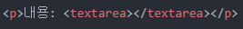
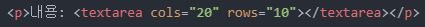
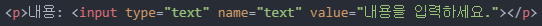
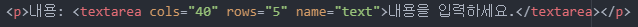
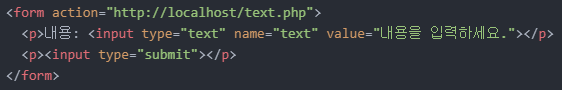
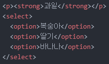
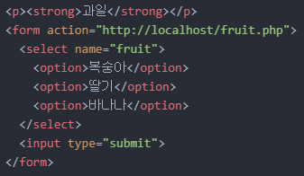
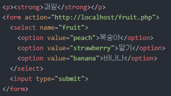

> MEMO: 어제는 그냥 쉬었어요. 대학교 개강이 코앞이라 그냥 에너지 좀 충전하고 싶었어요.
1. 오늘의 목표
- 'form' 태그와 같이 쓰이는 태그들과 친해지기
2. 목표 실천하기
오늘은 'form' 태그와 좀 더 친해지려고 합니다.
'form' 태그를 처음 접하고 조금 더 자세히 알고 싶어졌거든요.
이틀 전에 배웠듯이 'form' 태그는 서버에 데이터를 전송할 때 필요하며, 'input' 태그는 'form' 태그 내부에 쓰입니다.
그럼 바로 시작해보겠습니다.
텍스트 여러 줄 입력
아래는 이틀 전에 완성했던 텍스트 입력 상자입니다.
내용:
글자를 여러 줄 입력하고 싶은데 한 방향으로만 입력될 뿐만 아니라, 엔터키를 눌러도 소용이 없습니다.
이때, 'input' 태그 대신 textarea' 태그를 사용하면 여러 줄 입력이 가능해집니다.
아래는 해당 태그를 적용한 입력 상자와 코드입니다.
내용:

글자를 입력해보면 여러 줄 입력이 가능한 것을 알 수 있습니다.
입력 상자 크기도 조정 가능합니다.
'cols(열)' 속성과 'rows(행)' 속성을 이용하면 됩니다.
'cols="20"'과 'rows="10"'을 적용해보겠습니다.
내용:
아래는 해당 코드입니다.

여기서 문득 궁금한 것이 생겼습니다.
텍스트를 아무것도 입력하지 않은 상태일 때 화면에 어떤 텍스트가 표시되게 하고 싶더군요.
그래서 바로 찾아봤는데 'input' 태그와 'textarea' 태그에 차이점이 있었습니다.
'input' 태그에는 'value' 속성을 사용해야 하지만, 'textarea' 태그는 아무것도 사용하지 않는다는 것입니다.
바로 예시를 들어보겠습니다.
먼저, 'input' 태그를 사용한 결과와 해당 코드입니다.
내용:

다음은 'textarea' 태그를 사용한 결과와 해당 코드입니다.
내용:

두 태그의 차이점이 보이시나요?
'input' 태그를 사용할 땐 다른 속성들과 똑같이 적용하면 되지만,
'textarea' 태그를 사용할 땐 태그 외부에 입력해줘야 합니다.
이 결과물을 'form' 태그에 적용시키려고 합니다.
저는 'input' 태그를 'form' 태그에 적용시켜보겠습니다.
아래는 해당 코드입니다.

아! 추가로 설명할 것이 있습니다.
'action' 속성의 주소에 대한 것인데요, 해당 주소는 서버의 주소로, 현재 PC에 서버가 운용되지 않고 있다면(대부분이 그럴 겁니다.)
사이트에 연결할 수 없다는 문구가 나오게 됩니다.
그래도 주소창을 통해 'name' 속성의 역할을 확인할 수 있습니다.
클릭하여 선택하기
인터넷으로 설문조사할 때, 각종 재밌는 테스트를 할 때 등 조그마한 네모 상자나 원을 클릭하면 선택이 되는 것을 많이 보았을 것입니다.
또 인터넷으로 쇼핑할 때, 목록에서 구매하고자 하는 상품을 선택하여 상품을 고릅니다.
우리는 이런 것들을 흔히 드롭다운 리스트, 체크박스, 라디오 버튼 등으로 부릅니다.
먼저 드롭다운 리스트를 만들어보겠습니다.
이때 필요한 태그는 'select' 태그와 'option' 태그입니다.
'select' 태그는 말 그대로 선택하는 역할을, 'option' 태그는 선택 대상을 의미한다고 보시면 됩니다.
그런 이유에서 'select' 태그는 'option' 태그의 상위 태그가 됩니다.
그럼 바로 적용해보겠습니다.
과일
코드는 아래와 같습니다.

목록에서 한 가지 과일을 선택할 수 있음을 알 수 있습니다.
여기서 'select' 태그에 'multiple' 속성을 추가하면 중복 선택도 가능합니다.
과일
'Ctrl' 키나 'Shift' 키를 누른 상태로 클릭하면 중복 선택이 가능하다는 것을 알 수 있습니다.
이젠 해당 결과물을 'form' 태그에 적용시켜보겠습니다.
그전에, 'option' 태그에 다른 속성을 하나 추가시키고자 합니다.
바로 'value' 속성입니다.
좀 전에 위에서 배운 'value' 속성과 이름만 같을 뿐 역할은 다릅니다.
'value' 속성은 'name' 속성과 깊은 연관이 있습니다.
앞서 배운 내용에 따르면, 제출 버튼을 누르면 'name' 속성에 입력되어 있는 텍스트가 주소창에 나타납니다.
만약, 'name' 속성에 한글로 '복숭아'라고 입력되어 있으면 제출 버튼을 누를 시, 주소창에 한글로 복숭아가 출력될 것입니다.
그런데 'value' 속성에 영어로 'peach'를 입력하면 '복숭아'가 아닌 'peach'가 주소창에 출력됩니다.
즉, 컴퓨터가 알기 쉬운 언어로 데이터를 전송시켜주는 역할을 하는 것이 'value' 속성입니다.
그렇다면, 'name' 속성과 'value' 속성은 어느 태그에 쓰여야 할까요?
'name' 속성은 컴퓨터가 해당 데이터에 대한 정보를 알 수 있게끔 해주는 역할을 합니다.
그래서 복숭아, 딸기, 바나나가 쓰여 있는 태그인 'option' 태그 내부에 사용할 수 있지만,
위에서 'select' 태그가 'option' 태그의 상위 태그라고 했죠?
굳이 3개의 'option' 태그에 모두 적용할 필요가 없이 상위 태그인 'select' 태그에 딱 한 번만 적용해주는 것이 편하다는 것입니다.
'value' 속성은 선택지를 따라가야 합니다.
즉, '복숭아'는 'value="peach"', '딸기'는 'value="strawberry"', '바나나'는 'value="banana"'와 같이 'option' 태그에 적용해야 합니다.
이제 'form' 태그에 적용시켜볼 건데, 'value' 속성 유무의 차이도 비교해보려고 합니다.
가장 먼저, 'value' 속성이 없는 경우입니다.
과일
딸기를 선택하고 제출을 눌러보겠습니다.
주소창에 'fruit=딸기'로 출력된 것을 알 수 있습니다.
코드는 아래와 같습니다.

그럼 이번에는 'value' 속성을 적용했을 경우입니다.
과일
이번에도 딸기를 클릭하고 제출을 눌러보겠습니다.
주소창에 'fruit=strawberry'로 출력된 것을 알 수 있습니다.
전세계 공용 언어는 영어이기 때문에 웬만하면 'value' 속성을 이용하는 것을 추천합니다.
코드는 아래와 같습니다.

오늘은 여기까지 하고자 합니다.
내일은 체크박스를 만들어 보려고 하는데 시간이 된다면 라디오 버튼도 만들 예정입니다.
그럼 내일도 화이팅!